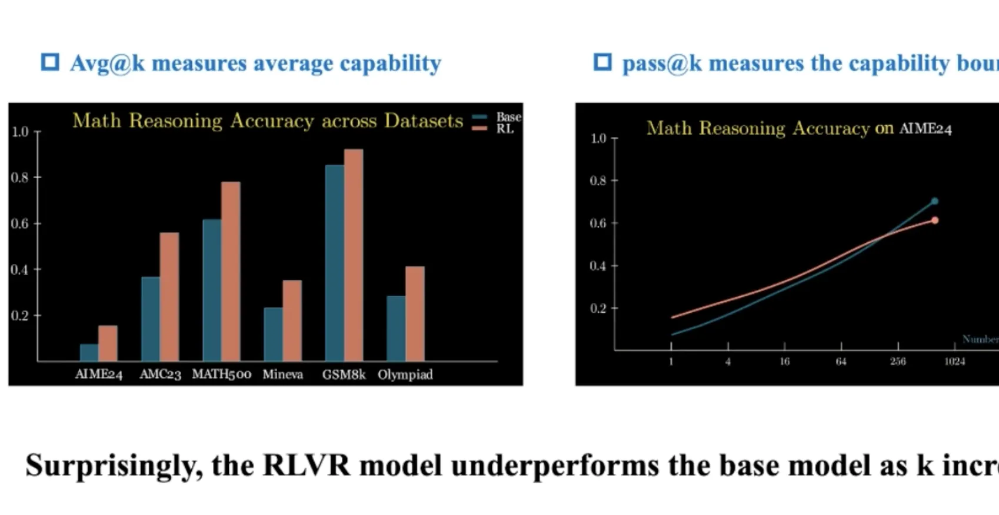
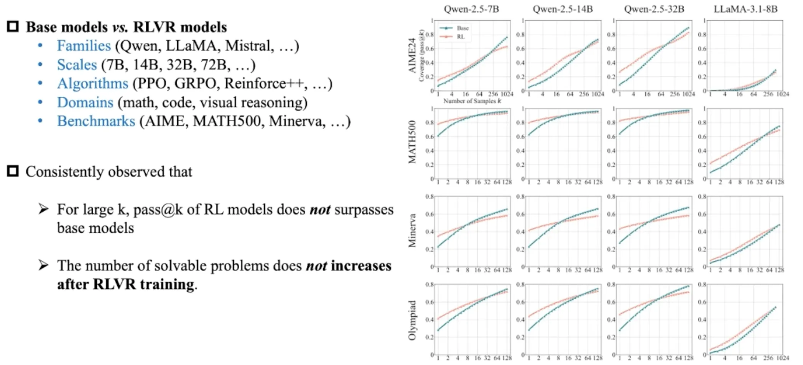
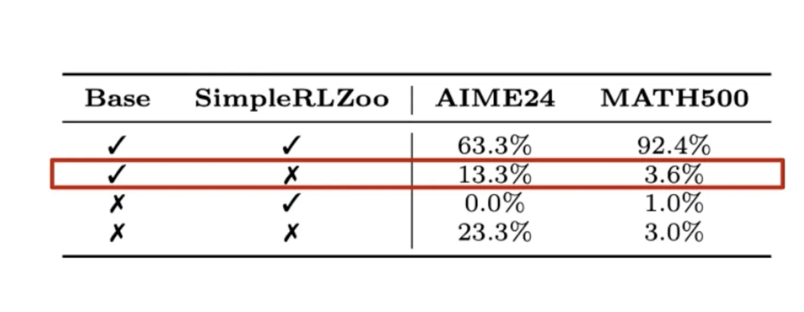
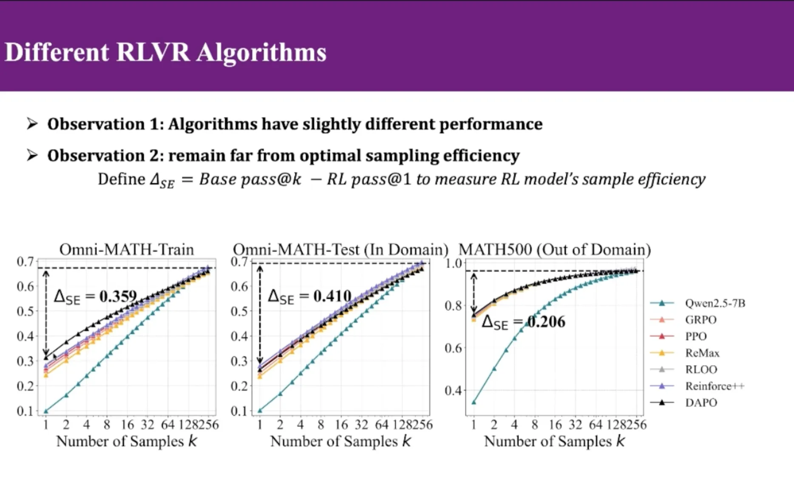
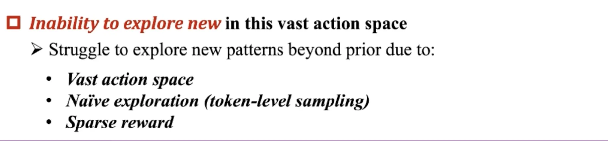
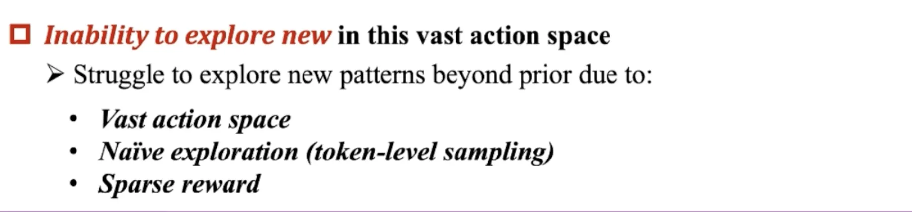

Does Reinforcement Learning Really Incentivize Reasoning Capacity in LLMs Beyond the Base Model?
阅读总结
本文深入分析了RLVR(LLM训练中使用的RL算法)对模型表现的真实作用，指出RL虽然提升了模型的表现，但是没有提高模型的upper bound。本文重点贡献在于做了非常详实的实验证明这一论点。实验包括：
- 统计LLM在pass@k的情况下的表现，用数据论证
- 使用不同的强化学习算法训练base model对比性能
把avg@k 变成pass@k
过去的测试LLM performance的方式：让LLM跑1000道题目，输出正确就记1分，计算正确率。本文为了测试LLM能力的边界，采用pass@k的测试方法：模型做K次，只要有1次做对就算对吗，这代表了模型能力的边界。 把测试改成pass@k之后发现，LLM在k值比较大的时候，表现反而不如base model。进一步在各个模型(Qwen LLaMa)和各个测试的benchmark(AIME24 MATH500..)上实验，也发现类似的现象。   对base model和经过rl的model回答问题的情况做分类，分为4类：base和rl都能做对/base能做对rl做不对/base做不对rl做对/base rl都做不对。发现base能做对的rl做不对，强化学习反而降低了模型的表现。 
使用不同的强化学习算法训练
发现RL算法只能提高k比较小的情况下的表现，随着k的增大，LLM的表现有一个upper bound，而且这个upper bound和base model是一样的。用人话说就是：RL的过程没有提高LLM的upper bound，只是让LLM能够尽可能少的K次尝试，就能回答正确。(这个发现说明：RL确实能够提升模型的表现，只是提升不了模型的upper bound)。 
Discussion
在RL领域中，AlphaGO非常出名。作为一个使用纯强化学习训练的围棋AI，AlphaGO能够下出来人类棋手意料之外的位置。这表明AlphaGO通过强化学习拓宽了现有围棋知识的边界。 为什么RLVR不能够拓宽LLM能力的边界呢？这是因为RLVR并不等于RL，相比于RL他有一些缺陷：
- 搜索空间很大: 相比于围棋的搜索空间，语言的搜索空间很大，模型随机采样是大概率得不到正确答案，也没有reward。这就是为什么现有的RL都依赖于一个比较强大的Pre-Train model。因为需要base model来引导，才能在广大的空间里面，输出一个正确的答案。
- sparse reward: LLM只有输出正确答案的时候才有reward，其他情况都是0。假设模型在RL过程中通过探索，生成了一个answer。这个answer大概率是没有reward的，这种探索边界的行为大概率会被抑制。
 
